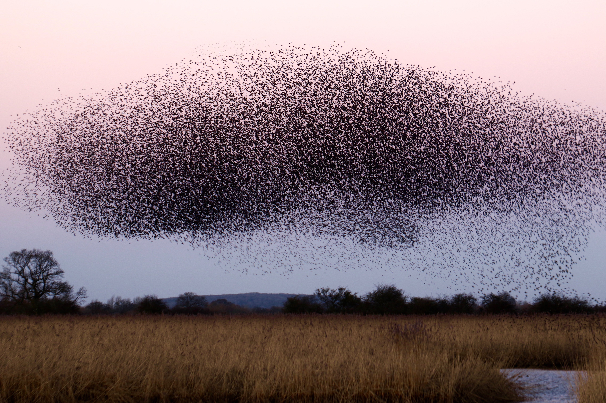

Particle Filter
Contents
Particle Filter¶
Even though the Kalman filter has many advantages and is the main choice for most applications, it also suffers from some limitations. There are two main limitations when it comes to the generic Kalman filter: the dynamic model and the measurement model must be linear and the noise must be Gaussian.
These limitations doesn’t normally pose problems in most applications. They can be overcomed through linearization, either in the form of a Linearized Kalman filter that are linearized around a nominal trajectory or a Extended Kalman filter that are linearized around the predicted state. And in many cases it is fairly reasonable assume Gaussion noise components.
However, if this is not the case the Kalman filter may provide very poor estimates, or it may even diverge due to severe non-linearities. One solution to this problem is to introduce what is called a Particle filter.

The main idea with the Particle filter is to overcome the two main limitations of the generic Kalman filter by tracking a large set of particles. Each particle represents a possible state vector and is propagated through the dynamic equations to produce an equal number of possible predicted states. These predicted states are then compared with the measurements and are then given a weight according to how well they fit the predicted states.
Thus, the set of state vectors that fits well with the measurements are updated and propagated further, while the set that doesn’t fit will die out. Further, the covariance matrix is then reconstructed based on the current distribution of the propagated state vectors. So, what do we achieve by doing this?
The Particle filter has in principle no limitiations concerning linearities nor the distribution of the noise components. It can handle any type of dynamic equation (as long as it is possible to compute it deterministically) and any type of distribution of the noise compnents. So, why do we still use the Kalman filter?
The main problem with the Particle filter is that it quickly becomes computational unmanageable when the number of particles becomes large. In applications with severe non-linarities and complex distribution of noise components, one will in practice need a very large number of particles to represent these complexities and the Particle filter becomes untracktable. However, with e.g. indoor navigation applications in robotics, the Particle filter will be the workhorse to deal with the severe non-linearities that arises in this case.